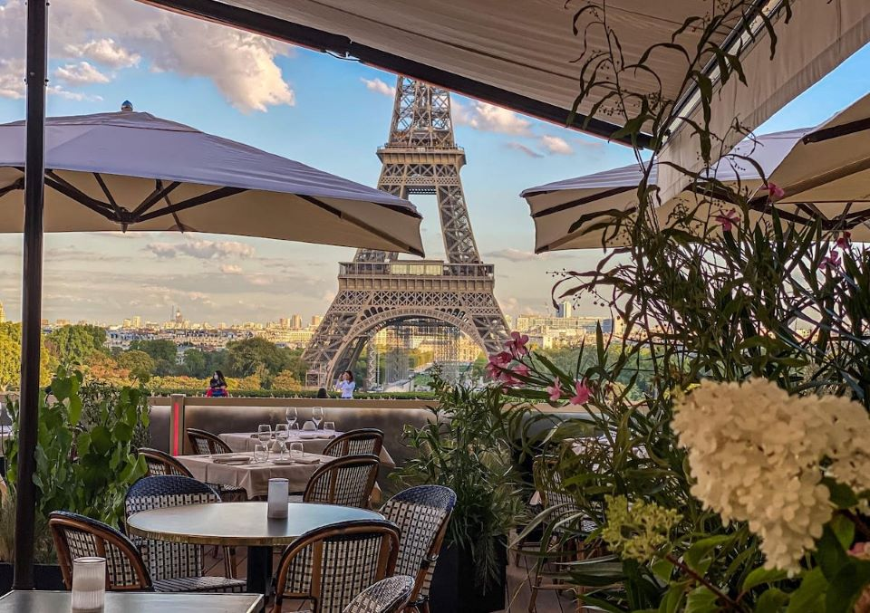
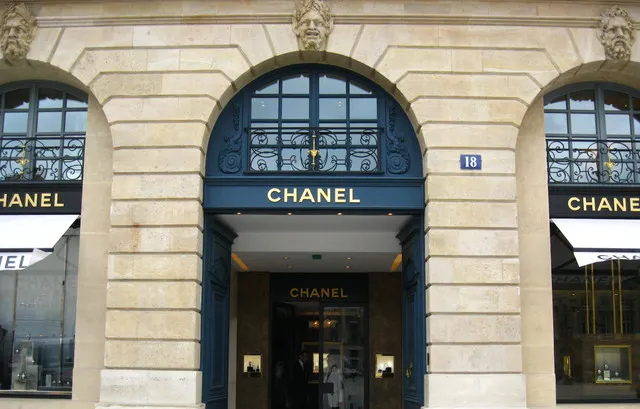
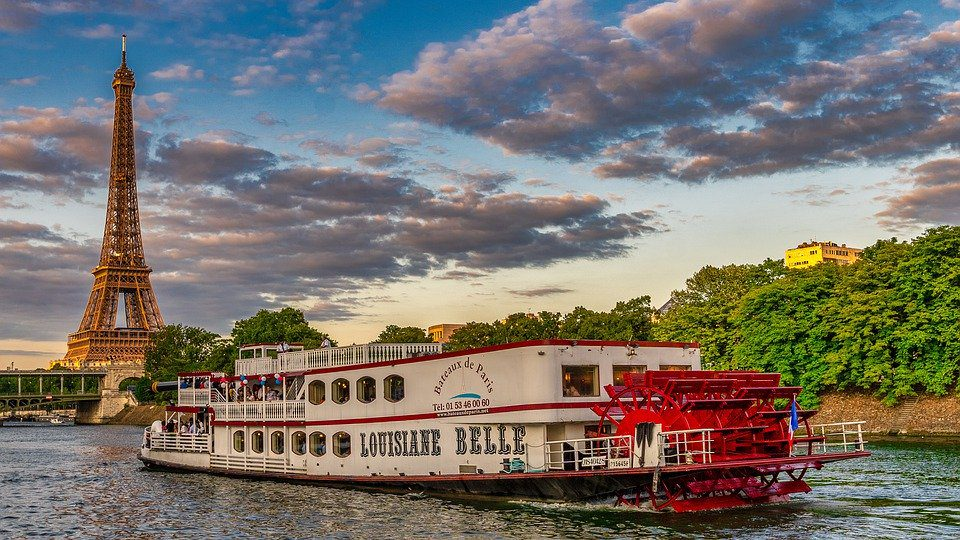

Many people are not mainly attracted by the famous monuments,Instead
they enjoy and feel the small things that specialize every city,And
coming to paris it is specialized with many things other than
monuments,Simply like luxurious cafes,resturants,luxury brand and of
course alot of othe things.

Luxurious Cafes
There has always been coffee in Paris but it’s only been within the
last decade that there has been genuinely good coffee in Paris.
That’s thanks to a robust specialty coffee movement that has turned
the capital into a coffee lover’s dream. With local roasters and
barista-led shops in nearly every arrondissement, Paris rivals all
the best European destinations for espressos, pour-overs, flat
whites, and crèmes. The aesthetics may vary from café to café but
the selection of drinks will be familiar and served alongside
delicious sweets. Here, find our recommendations for the best
Parisian cafés and coffee shops to grab a cup.

Chanel Store
CHANEL, founded in 1910 in Paris, France, adheres to the creative
ideas and forward-looking ideas of its founder, Ms. Chanel, and
becomes the bellwether of modern female aesthetics. The brand has a
wide range of products, including clothing, jewelry and accessories,
cosmetics, skin care products, perfumes, etc. Each category is
well-known, especially perfume and fashion. The Chanel Store in
Place Vendôme, which opened in 1997, sells watches and high-quality
jewelry with fewer customers and excellent staff. Place Vendôme is a
well-known high-end jewelry center, the window display of gold and
glittering jewelry.

River Cruise
ooking for a romantic dinner cruise in Paris? The Diamant Bleu
provides you a high quality culinary and entertaining experience.
Board with us on this panoramic yacht on the Seine river cruise &
discover the iconic parisian monuments while enjoying our chef's 3
course menu. From the National Library, passing by Notre Dame
Cathedral, Conciergerie, Concorde Square, main historical bridges,
Eiffel Tower until the Statue of the Liberty, let Paris unveil
itself to you during our 2 hours and 30 minutes cruise. Take your
time to go out and enjoy our panoramic terrace, accessible
throughout the cruise. It's the perfect spot for selfies with the
Eiffel Tower while sipping a cup of your favourite drink .